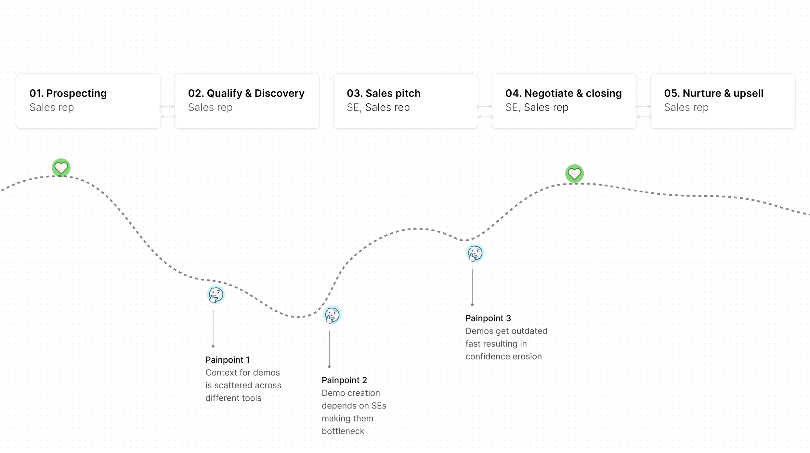
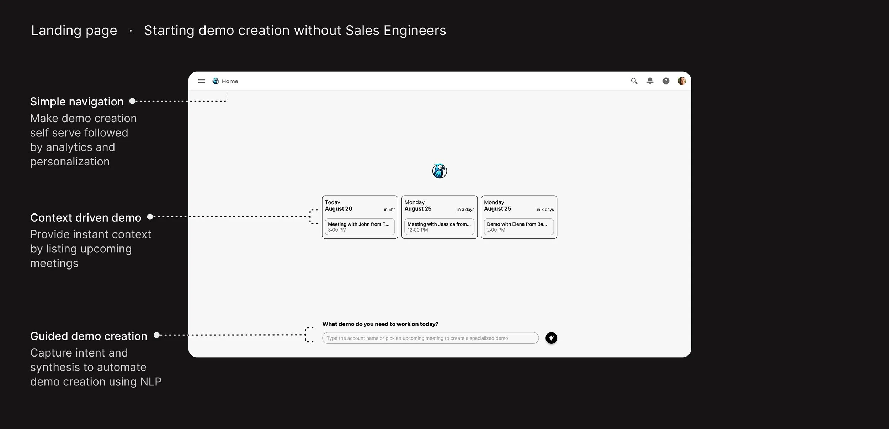
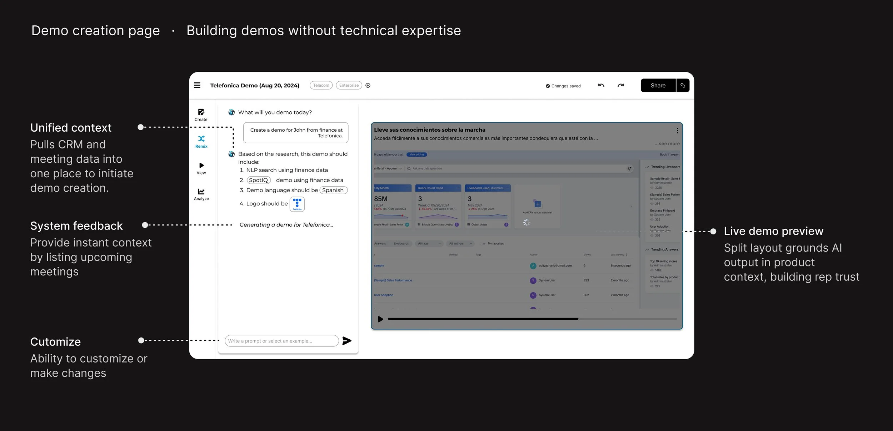
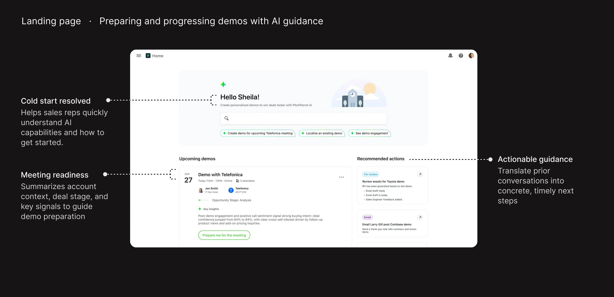
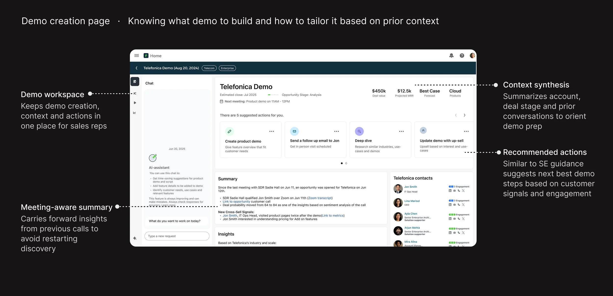
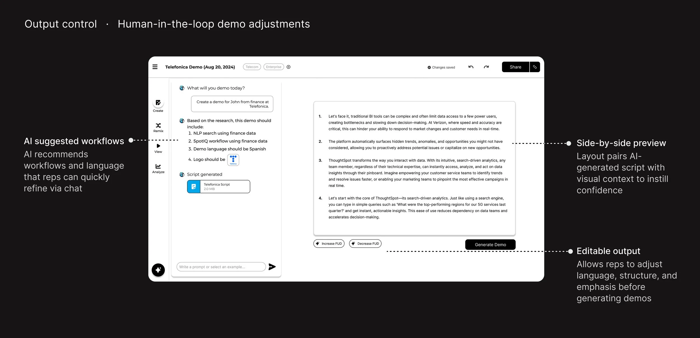
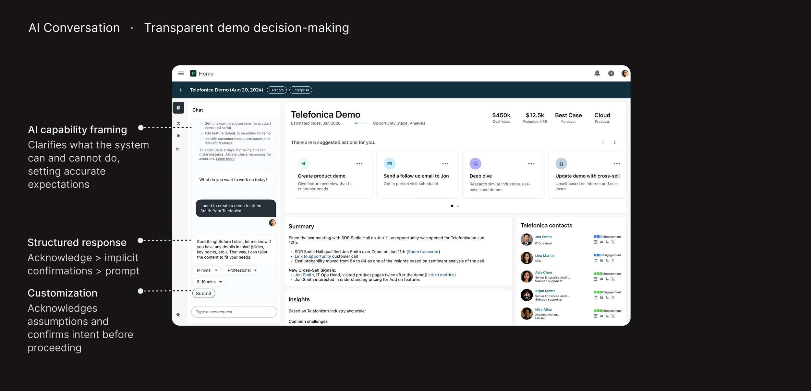
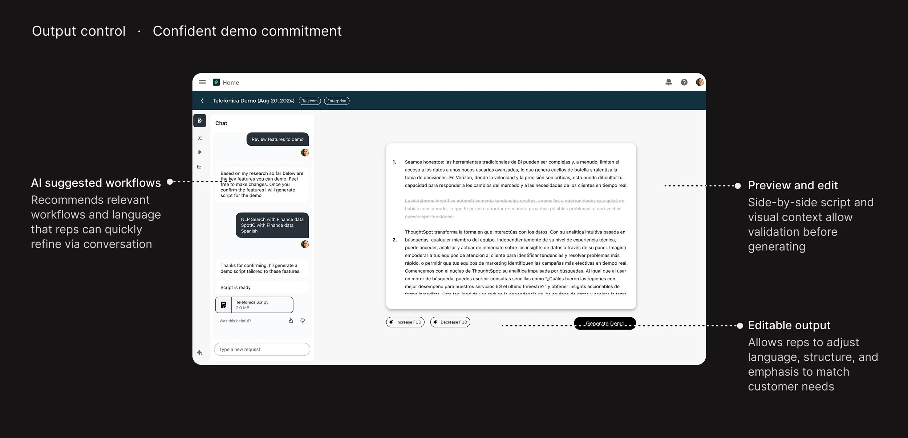
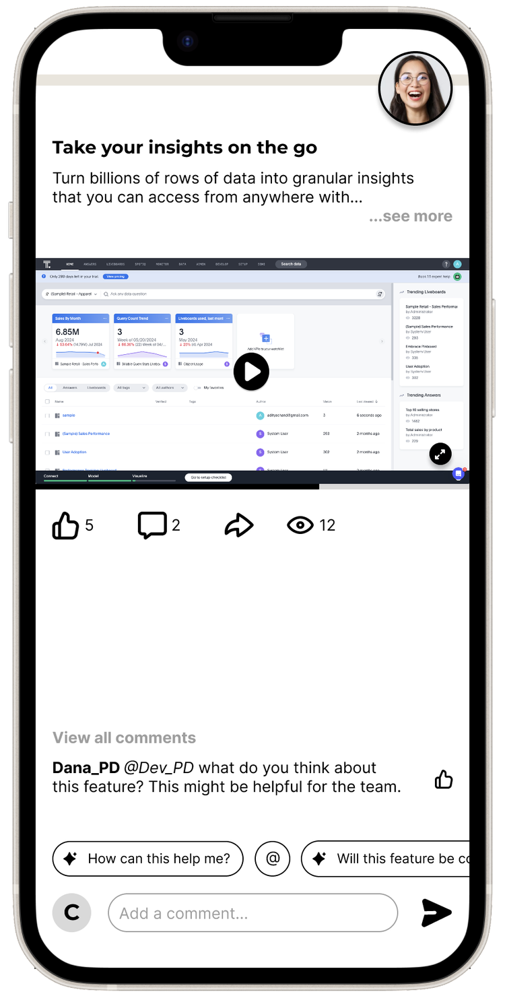

Product demo creation platform with AI
Helps sales teams create personalized, high-quality product demos faster, dropping time to value about 80%

Today, B2B software teams ship new features at an increasing pace — but sales demo creation remains slow and manual. Sales reps often depend on Sales Engineers (SEs) to create and tailor a demo for each prospect, introducing delays, outdated content, and limited scalability.
As products become more complex, this dependency reduces visibility into demo quality and impact — directly affecting sales velocity.
Meet Sheila, the Sales Rep
Sheila is non-technical and works in time-compressed moments, prepping for a demo between meetings. She constantly interacts with Account Executives, Sales Engineers, and the prospect while demos are repeatedly iterated and layered with technical detail. She needs speed, confidence, and autonomy as she pitches the product.
50+ conversations across the sales ecosystem
I needed to understand how demos get created during a sales cycle, how reps interact with the key people in the ecosystem, the core use cases, and the most emotional pain points — so I could design for the most impact. I gathered input from over 50 customers through interviews and an online survey, across sales engineers, account executives, and sales reps.

Key findings
- Manual process. Reps depend on SEs to map prospect needs to relevant features, making the SE a bottleneck and dampening momentum. “I feel helpless watching good deals stall.”
- Scattered context. Context for demos is spread across CRM, call transcripts, notes, prior demos, and docs — creating cognitive overload. “I'm drowning in tools, content, and guesswork.”
- Outdated content. Demos go stale fast, eroding confidence. “I don't feel credible without an SE. I need to find the right thing fast.”
The scenario, and four guidelines
Scenario. Sheila has a demo within 24 hours. The qualification and discovery call with the prospect is already done — their pain points, needs, budget, and timeline are captured.
Use smart defaults rather than setup — reps are racing the clock.
Capture intent and synthesis through a text modality.
Show what's AI-generated and why it's suggested.
Reveal complexity only when it's needed.
How can sales reps create demos without relying on SEs?
Iteration 1 — self-serve demo creation. The first pass let reps generate a demo on their own.


Feedback
- Reps repeatedly raised trust issues with auto-generated demos. “Just because it's automated doesn't mean I'll use it in front of a customer.”
- They wanted more control and the ability to tweak the narrative.
- With many demos in flight, they needed an overview/dashboard to keep up.
Iteration 2 — context-driven demo creation. I reframed the flow around the rep's context — guided inputs that steer the model — instead of a one-shot generate button.


How can we help reps trust and confidently send demos without SE support?
Iteration 1 — human-in-the-loop demo creation for confidence. Every generated section is reviewable and editable, so reps can trust, tweak, or regenerate.

Iteration 2 — trust-driven decisions with granular controls. A deeper layer of controls lets reps shape the narrative and see where the model is inferring vs. citing real data — so they know what to double-check before going live.


The end-to-end workflow
An interactive prototype of the full demo-building flow — from context to a ready-to-send demo.
The customer experience with a shared link

What the prospect sees when they open a demo — the rep's work lands as a polished, on-brand moment.
The demo opens on any device with a single shared link — no login, no download. The narrative, visuals, and personalization the rep set up carry through exactly as intended.
Think in scalable primitives when designing for AI agents.
Pain shows up as workarounds — watch what people do, not just what they say.
Hide complexity, preserve capability — so users can act with confidence.